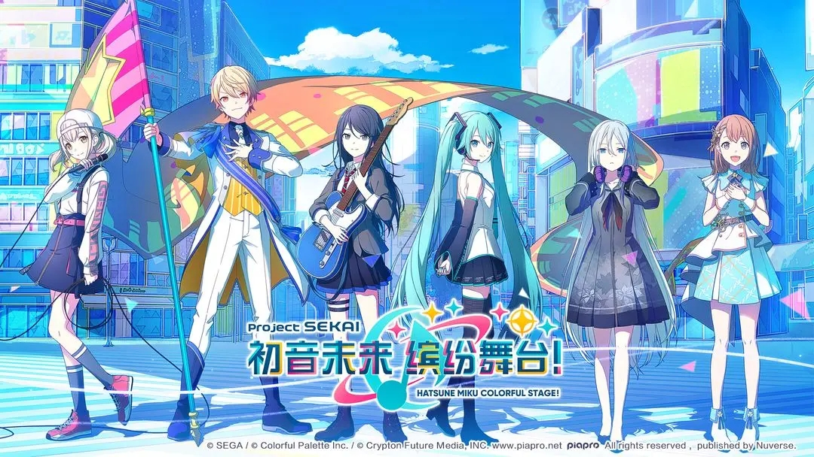

Rhythm Game
Music / Characters
Hatsune Miku: Colorful Stage!
I like how it blends rhythm gameplay with character stories, bright visual style, and music that makes each session feel energetic.
- Favorite parts: music, events, and character groups
- Shows my interest in creative communities
- Inspires me with its polished visual presentation